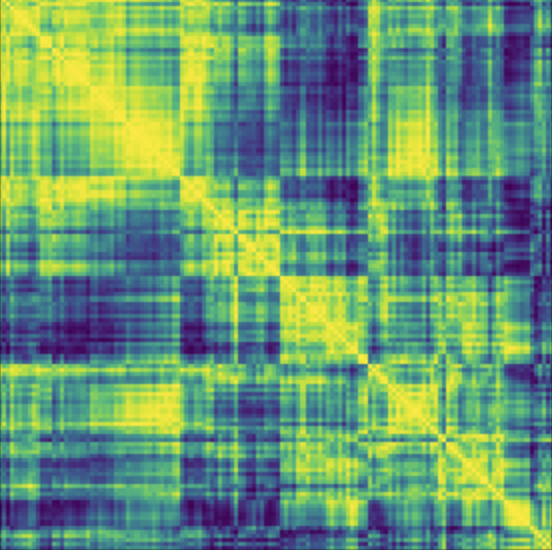
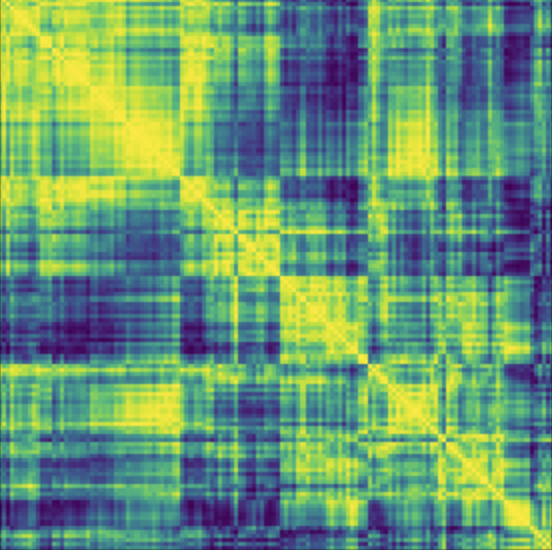

Loading About Me...
About Me

First Section
This section will cover important aspects of my research journey, detailing my projects and areas of focus.
Second Section
More information about my collaborations and contributions to the scientific community.
Get Started
If you’d like to learn more, feel free to reach out via the contact information provided below.